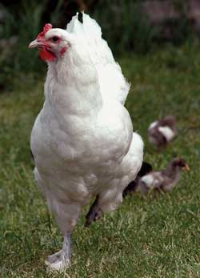

The U.S. Department of Agriculture (USDA) is embarking upon a newprogram that seeks to have every single livestock animal in theUnited States identified, tagged and possibly implanted with aradio chip. The highly controversial National Animal IdentificationSystem (NAIS) would require anyone who owns even one livestockanimal ? such as a pigeon, rabbit, chicken or horse ? to registerthat animal and its location in a federal database.
The USDA maintains that the program could help track and containdisease outbreaks. But livestock owners criticize the USDA'sintentions, claiming that this is just another federally supportedbenefit for large-scale 'factory farm' producers, whose animals arethe most at risk for disease outbreaks. In addition, the NAIS willplace a financial burden on small-scale livestock owners, andinvade individual privacy, to boot. Currently, enrollment in NAISis voluntary, but the program is scheduled to become mandatory by2009.
View the details of the USDA'simplementation plan.
Learn how you can takeaction.
Readlegal comments about NAIS.
Tell your congressmen what youthink about NAIS.
|
 |
|
|